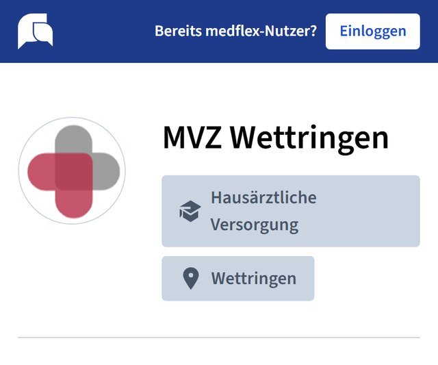
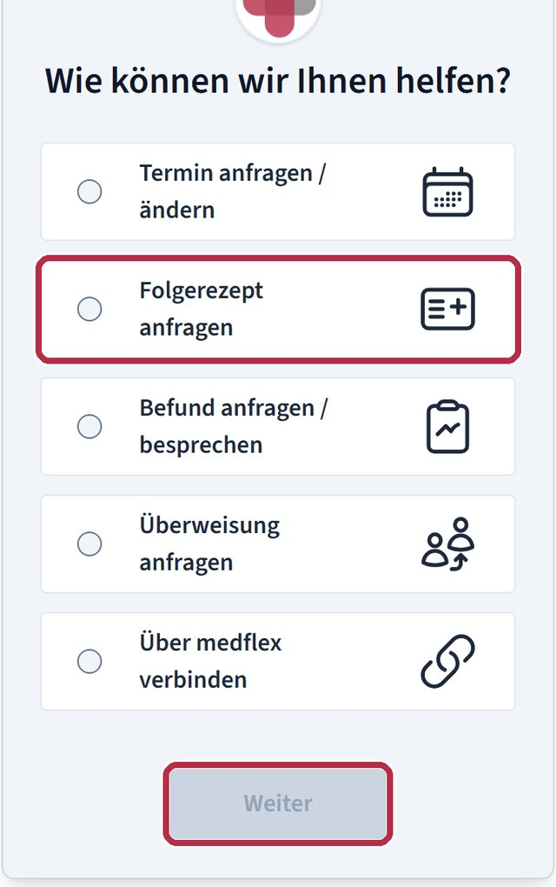
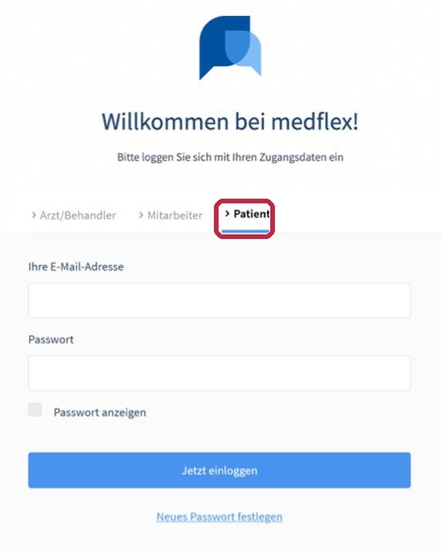
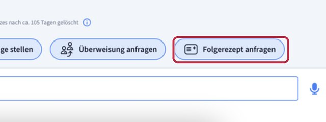
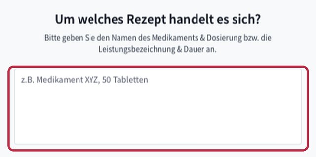
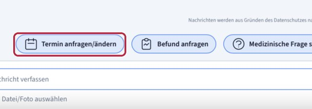
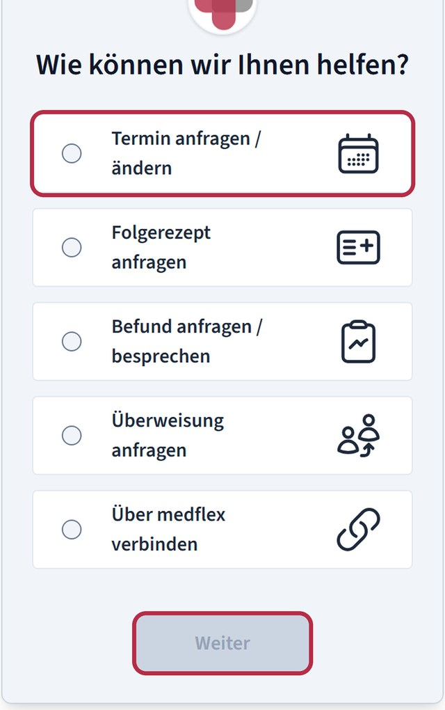
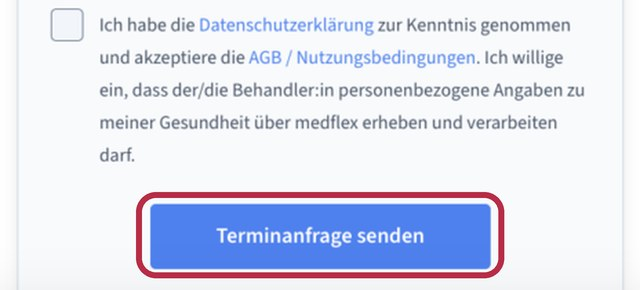

Unsere medflex-Seite öffnen
Tippen Sie auf dieser Website auf „Nachricht über medflex“ (oben rechts auf jeder Seite). Es öffnet sich unsere Seite bei medflex mit dem Logo des MVZ.

Start › Schritt für Schritt: medflex und Telefon
Anleitungen
In Ruhe erklärt, mit Bildern: Wie Sie uns über medflex erreichen, ein Rezept bestellen, einen Termin ändern und was passiert, wenn am Telefon der Assistent abnimmt.
Alle Bilder sind Beispielansichten von medflex. Ihre Ansicht kann etwas anders aussehen, die Schritte sind dieselben. Sie brauchen nichts zu installieren; medflex läuft im Browser Ihres Handys oder Computers. Wenn Sie lieber eine App möchten: Es gibt medflex kostenlos für Android und iPhone. Von Freitag 12 Uhr bis Montag 7 Uhr sind Anfragen und Nachrichten über medflex nicht möglich.
Dauert etwa fünf Minuten. Danach geht jede weitere Nachricht in unter einer Minute.
Tippen Sie auf dieser Website auf „Nachricht über medflex“ (oben rechts auf jeder Seite). Es öffnet sich unsere Seite bei medflex mit dem Logo des MVZ.

Unter „Wie können wir Ihnen helfen?“ tippen Sie auf das Passende: Termin, Folgerezept, Befund, Überweisung oder einfach „Über medflex verbinden“. Dann auf „Weiter“.

Beim ersten Mal fragt medflex nach Vorname, Nachname, Geburtsdatum, Telefonnummer, E-Mail-Adresse und einem Passwort (mindestens 8 Zeichen, mit einer Zahl und einem Großbuchstaben). Setzen Sie dann den Haken bei Datenschutzerklärung und AGB. Ohne diesen Haken lässt sich die Anfrage nicht abschicken. Danach tippen Sie auf „Anfrage senden“. Das Geburtsdatum braucht das MVZ, um Sie sicher zuzuordnen.
Tipp: Schreiben Sie sich das Passwort auf, Sie brauchen es beim nächsten Mal wieder.
medflex schickt Ihnen eine E-Mail. Tippen Sie auf den Link darin, damit Ihr Zugang bestätigt ist. Kommt keine E-Mail, schauen Sie bitte in den Spam-Ordner.
Ihre Anfrage liegt jetzt bei uns. Wir antworten Ihnen in medflex; Sie bekommen dazu eine Nachricht per E-Mail oder in der App.

Wenn Sie schon einen medflex-Zugang haben. Sonst zuerst Anleitung 1.
Öffnen Sie app.medflex.de/patient oder die medflex-App, E-Mail-Adresse und Passwort eingeben, „Jetzt einloggen“. Dann das MVZ Wettringen auswählen.
Unten im Gespräch mit dem MVZ gibt es Knöpfe für die häufigsten Anliegen. Tippen Sie auf „Folgerezept anfragen“.

Schreiben Sie den Namen des Medikaments und die Packungsgröße so, wie es auf der Packung steht, zum Beispiel „Ramipril 5 mg, 100 Tabletten“. Dann abschicken. medflex fragt noch, ob Sie das Rezept abholen möchten oder es Ihnen über medflex zugeschickt werden soll.

Ihr Rezeptwunsch landet direkt bei unserem Team, ohne Warteschleife. Sie bekommen in medflex eine Antwort, sobald das Rezept fertig ist. Bitte rechnen Sie mit etwas Vorlauf und bestellen Sie nicht erst, wenn die letzte Tablette genommen ist.
Genauso einfach wie ein Rezept. Absagen hilft uns sehr: Der Termin wird für jemand anderen frei.
Nach dem Einloggen bei medflex finden Sie unten im Gespräch den Knopf „Termin anfragen/ändern“. Wenn Sie noch keinen Zugang haben, geht es über unsere medflex-Seite: Anliegen „Termin anfragen / ändern“ wählen und den Zugang anlegen (Anleitung 1).

medflex fragt, ob Sie einen neuen Termin möchten, einen bestehenden ändern oder absagen wollen. Bei einem neuen Termin schreiben Sie kurz, worum es geht und seit wann. Beim Absagen reicht das Datum des Termins.

Beim ersten Mal setzen Sie vor dem Abschicken den Haken bei Datenschutzerklärung und AGB. Danach tippen Sie auf „Terminanfrage senden“. Den Terminvorschlag bekommen Sie in medflex. Für Termine am selben Tag rufen Sie bitte morgens ab 7:30 Uhr oder nachmittags ab 14:30 Uhr an: 02557 377.
Notfälle bitte nie über medflex. In Lebensgefahr: 112. Außerhalb der Sprechzeiten: 116 117.

Bei vielen Anrufen gleichzeitig nimmt ein digitaler Assistent von medflex das Gespräch an. Niemand muss in der Warteschleife hängen.
Sie wählen 02557 377. Wenn der Assistent abnimmt, hören Sie eine Begrüßung. Sie müssen keine Tasten drücken.
„Willkommen beim digitalen Telefonassistenten …“
So ungefähr beginnt die Ansage (Beispiel laut medflex).
Sagen Sie in Ruhe, worum es geht, wie auf einen Anrufbeantworter: Ihren Namen, Ihr Geburtsdatum und Ihr Anliegen, zum Beispiel „Ich brauche ein Folgerezept für …“. Der Assistent schreibt das für unser Team mit.
Name · Geburtsdatum · Anliegen · Rückrufnummer
Mehr braucht das Team nicht.
Ihr Anliegen liegt als Text bei unserem Team und wird in der Reihenfolge bearbeitet. Die Antwort kommt über medflex oder per Rückruf. Wenn es dringend ist, sagen Sie das bitte gleich am Anfang.
Bilder: Beispielansichten der öffentlichen medflex-Seite des MVZ Wettringen (arzt.medflex.de, 29.10.2026) und der offiziellen medflex-Hilfe für Patientinnen und Patienten (medflex.de/hilfe/patienten, 29.10.2026). Ohne Anmeldung aufgenommen, keine persönlichen Daten. Der Ablauf des Telefonassistenten ist nach der Beschreibung von medflex wiedergegeben; die genaue Ansage des MVZ kann abweichen.